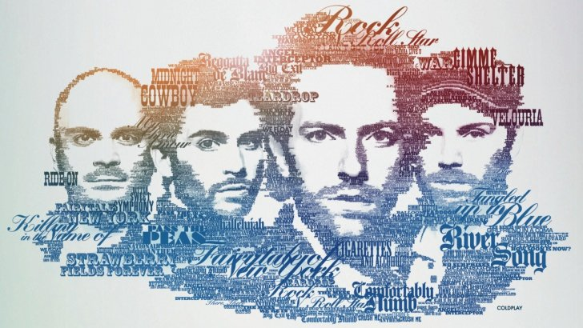

COLDPLAY

介紹
- 成立於1996年，來自英國英格蘭倫敦的另類搖滾樂團。
團員包括克里斯·馬汀（主唱、鍵盤、吉他）、強尼·邦藍（主奏吉他）、蓋·貝瑞曼（貝斯吉他）及威爾·查恩（鼓、合音、其他樂器）。
樂團最早成形於馬汀與邦藍就讀於倫敦大學學院時期。馬汀與邦藍組成了Pectoralz樂團後，貝瑞曼加入樂團作為貝斯手，更名為海星樂團。
查恩是最後一個加入樂團的成員，當查恩加入了樂團之後，他們把樂團的名字改為酷玩樂團。
專輯
- 2000 Parachutes
- 2002 A Rush Of Blood To The Head
- 2005 Ｘ＆Ｙ
- 2008 Viva La Vida
- 2011 Mylo Xyloto
- 2014 Ghost Stories
- 2015 Adventure Of A Lifetime
- 2017 Kaleidoscope
歌曲
- Yellow
- In My Place
- The Scientist
- Clocks
- Speed Of Sound
- Fix You
- Viva la Vida
- Paradise
- Charlie Brown
- Every Teardrop Is A Waterfall
- Magic
- A Sky Full Of Stars
- Everglow
- A Head Full Of Dreams
- Hymn For The Weekend
- Adventure Of A Lifetime
- Up&Up
- Something Just Like This (Tokyo Remix) by Coldplay & The Chainsmokers